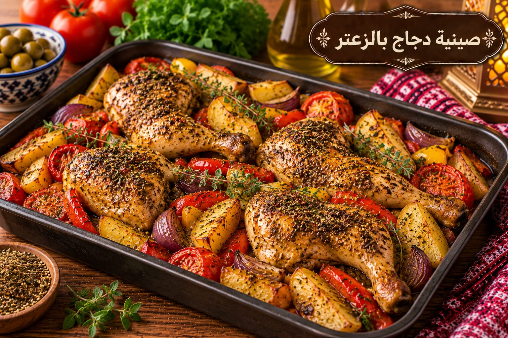

صينية دجاج بالزعتر
دجاج بالزعتر والليمون

مقادير صينية دجاج بالزعتر
- 800 غ دجاج
- 2 ملعقة كبيرة زعتر
- 3 ملاعق كبيرة زيت زيتون
- عصير ليمونة
- 1 ملعقة صغيرة ملح
- ½ ملعقة صغيرة فلفل أسود
- ½ كوب ماء أو مرق
طريقة عمل صينية دجاج بالزعتر
- اخلطي الزعتر والزيت والليمون والملح والفلفل وغطّي بها الدجاج.
- اتركي الدجاج في التتبيلة 30 دقيقة.
- رتبيه في صينية وأضيفي نصف كوب الماء أو المرق.
- اخبزي على 200°م نحو 50–55 دقيقة حتى ينضج ويتحمر.